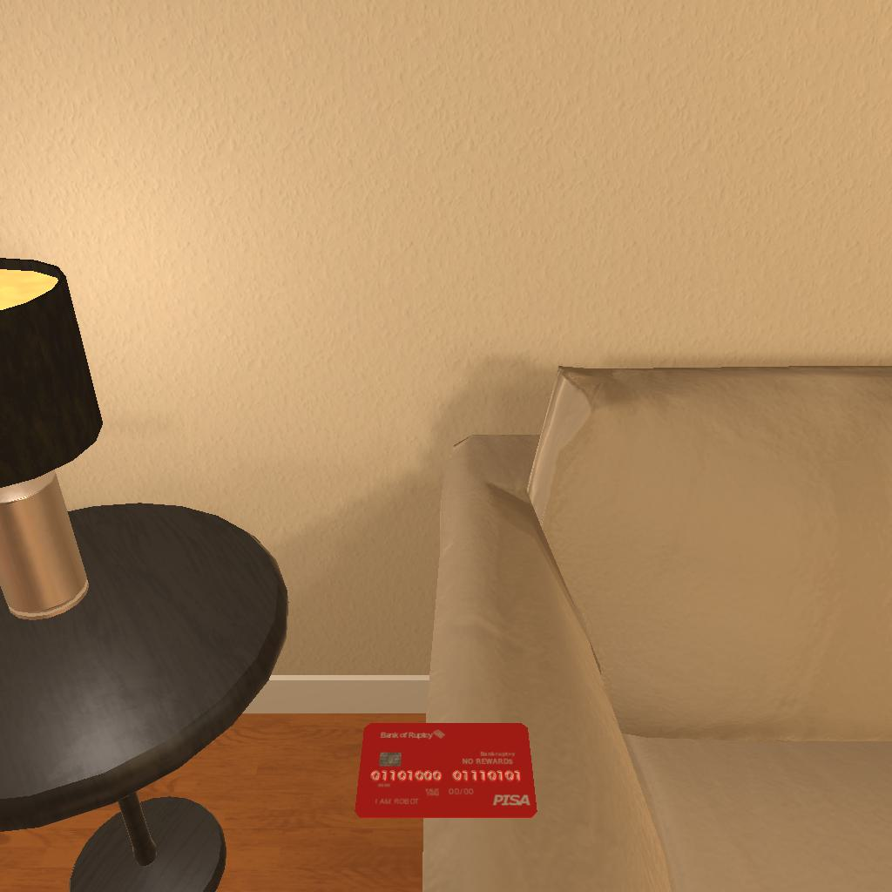

---------------------------------------------------------task: 7---------------------------------------------------------
--------------------------------------------------------------------------------------------------------------------------------------------------------------------
--------------------------------------------------------------------------------------------------------------------------------------------------------------------
Step:--------------------------------------------------------------------------13-------------------------------------------------------------------------------
----------------------------------------
VLM Prompt:
Image1:
Image2:
Image3:
**Instruction**
1. Analyze the provided images to identify all visible household objects and compare the difference between images (e.h. whether the object is opened or not and taken on hand or not), focusing on those relevant to the task description "put a creditcard in coffeetable."
2. Use the analysis of images and the task hint "The agent must find an object of the desired type, pick it up, find the correct location to place it, and put it down there." to answer the question: what is the most reasonable action in the choices for the task description "put a creditcard in coffeetable"?
3. Decide and write the answer using the template: The answer is: (i): , where i is the real number. If there is no desired object in images, search every place based on **Initial Observation** to find the object. And if no one is exactly correct, choose a similar answer.
**Initial Observation**
You are in the middle of a room. Looking quickly around you, you can see armchair (1-2), dresser (1), garbagecan (1), cabinet (1-4), drawer (1-4), coffeetable (1), sidetable (1), sofa (1)
**Answer Choices**
(1): go to armchair 1
(2): go to armchair 2
(3): go to dresser 1
(4): go to garbagecan 1
(5): go to cabinet 1
(6): go to drawer 1
(7): go to drawer 2
(8): go to cabinet 2
(9): go to drawer 3
(10): go to cabinet 3
(11): go to drawer 4
(12): go to cabinet 4
(13): go to sidetable 1
(14): go to sofa 1
(15): take box 1 from coffeetable 1
(16): take remotecontrol 1 from coffeetable 1
(17): take lightswitch 1 from coffeetable 1
(18): take creditcard 2 from coffeetable 1
(19): examine coffeetable 1
**Answer**
Let's think step by step by following the instructions.
----------------------------------------
----------------------------------------
Original Response:
Analyzing the images provided:
Image1 and Image2 show a sidetable with a lamp and a credit card on the floor next to the sidetable. The credit card is the same in both images, indicating that it has not been moved or picked up. The task description is to put a credit card on the coffee table, which means we need to pick up the credit card and place it on the coffee table.
Image3 shows the coffee table with a box and remote control on it, but no credit card.
Based on the analysis and the task hint, the most reasonable action to perform the task description "put a creditcard in coffeetable" is to pick up the credit card from the floor next to the sidetable and then place it on the coffee table.
The answer is: (18): take creditcard 2 from coffeetable 1. However, this action is incorrect because the credit card is not on the coffee table to begin with; it is on the floor next to the sidetable. Since the credit card is not on the coffee table, and there is no option to pick up the credit card from the floor, we need to search every place based on **Initial Observation** to find the object.
None of the answer choices directly allow us to pick up the credit card from the floor. The closest action related to the task is to go to the sidetable where the credit card is located.
The answer is: (13): go to sidetable 1.
----------------------------------------
----------------------------------------
>>> Refine Original VLM Response and Get Pure Action: take creditcard 2 from coffeetable 1
----------------------------------------
-----------------------------------------------------------------
Running time: 29.799535036087036 seconds
Total Money: 3.3367700000000013
-----------------------------------------------------------------
-----------------------------------------------------------------
Text Observation:You pick up the creditcard 2 from the coffeetable 1.
-----------------------------------------------------------------
UNSUCCEED